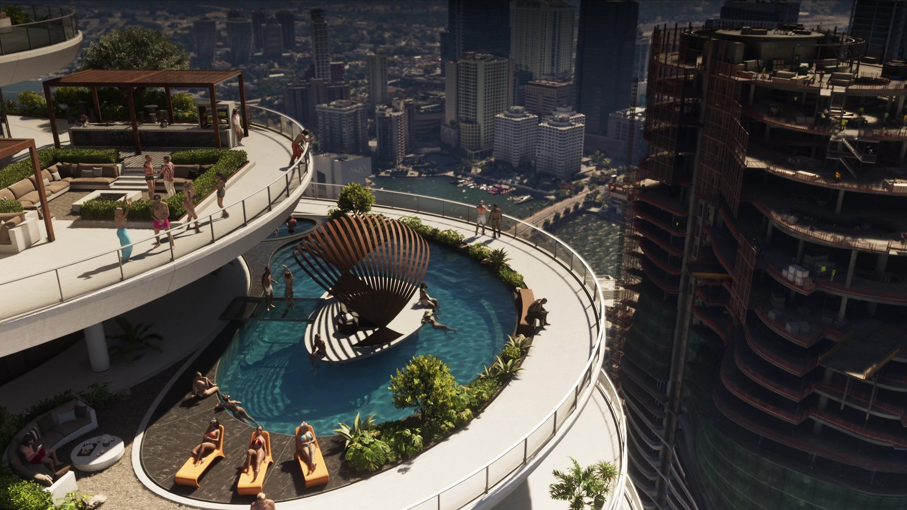

Сводка дня: 28 сентября 2026
Обновлено:

- До релиза — 52 дня, до предзагрузки — 45.
- Завтра, 29 сентября, — номер Game Informer №382. Журнал выйдет больше чем в 50 странах.
- Мы нарезали официальный «Расширенный показ» (26:48) на кадры: 594 чётких снимка в 4K.
- Сегодня на сайте семь материалов по этому видео — от карты до холодильника.
Главное
Воскресенье перед большой неделей — самое тихое время. Rockstar молчит, журналисты ждут завтрашнего номера Game Informer. Мы использовали паузу по-своему: взяли официальное 26-минутное видео Rockstar и разобрали его на кадры. Оказалось, что в нём спрятано больше, чем успели пересказать новостные сайты в августе.
Game Informer: что ещё известно
Что случилось: к уже известным деталям номера добавились новые. Журнал обещает не только 12 скриншотов и интервью, но и эксклюзивный арт с Джейсоном и Лусией, а сам номер будет продаваться больше чем в 50 странах. По данным GamingBible, в материале пойдёт речь и о том, что игра отслеживает, насколько «профессионально» герои проводят ограбления, и это влияет на их репутацию.
Что это значит для игрока: если про «профессионализм» подтвердится, стиль ограбления будет иметь последствия — не только сколько вынес, но и как. Разберём, как только номер выйдет.
594 кадра: зачем мы это сделали
Что случилось: «Расширенный показ» Rockstar весит в 4K около 14 ГБ. Мы вырезали кадр каждые две секунды — получилось 804 снимка. Убрали чёрные, смазанные и почти одинаковые — осталось 594. Теперь у нас есть официальная база кадров, по которой можно проверять слухи и разбирать детали.
Что это значит для игрока: на сайте будет больше настоящих игровых кадров вместо одних и тех же промо-артов. Всё видео по минутам — «Расширенный показ» GTA 6: что показали за 26 минут — с таймкодами.
Три находки дня
- У оружия есть модели. На 04:26 подсказка на экране — «Moreland 850 Shotgun». Значит, в игре не просто «дробовик», а конкретные вымышленные марки. Подробнее — Оружие и снаряжение в GTA 5 и GTA 6: карманы без дна закончились.
- Стример в багажнике. На 18:24 в углу экрана — прямой эфир на 51 тысячу зрителей, а его герой едет в открытом багажнике. Чат пишет «KING OF TRUNK!!!». Подробнее — Что игроки заметили в «Расширенном показе» GTA 6.
- Холодильник знает историю серии. На 07:18 на дверце — магниты банков из GTA V. Разбор — Разбор кадра: что лежит в холодильнике в Вайс-Сити.
Что ждём дальше
- 29 сентября — Game Informer №382: 14 страниц, 12 скриншотов, интервью.
- 30 сентября — 50 дней до релиза.
- 1 октября — четверг, проверяем Rockstar.
Составьте свой план на первые дни в Леониде — Чек-лист: чем займусь в GTA 6 первым.
Источники: GamingBible (27.09.2026); Game Informer; Rockstar Games — «Grand Theft Auto VI: An Extended Look».